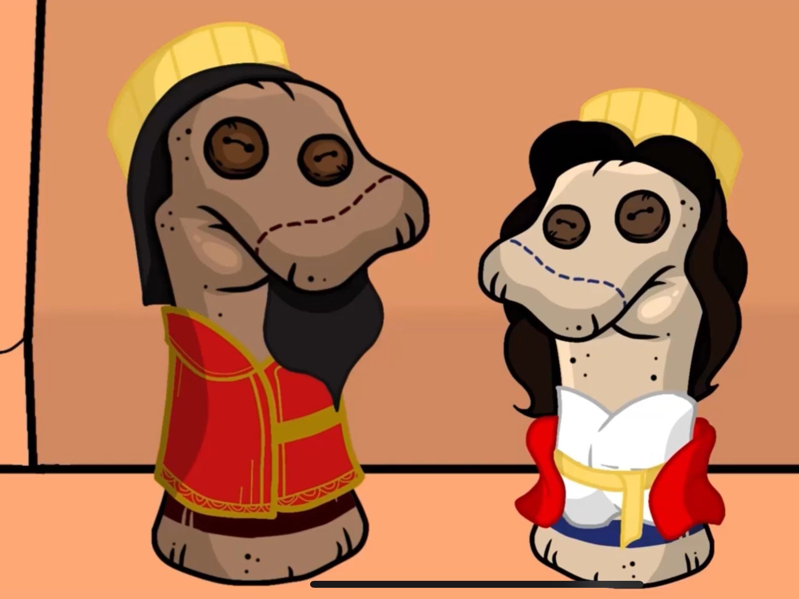

My Projects
Telemedicine Mobile App
Designing a wireframe on Figma for a mobile app with
a simple, senior-friendly layout for virtual diagnoses
and outpatient care; Planning to implement HTML, CSS, and Javascript
as the main framework for functionality.
Stop Motion Animation

For a high school theology class, I made an animated educational video
on the Jewish holiday, Purim, and on the full summary of the book of Esther.